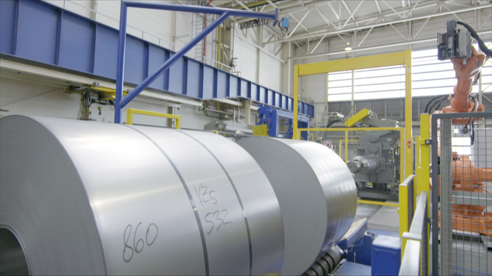
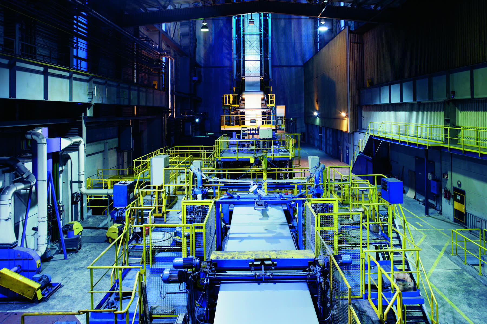
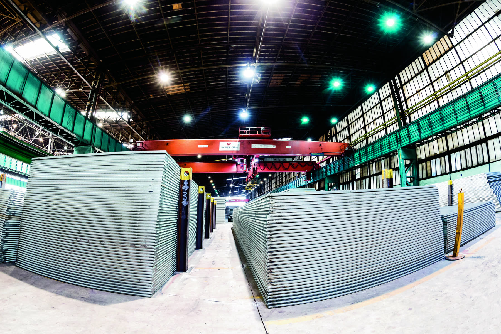
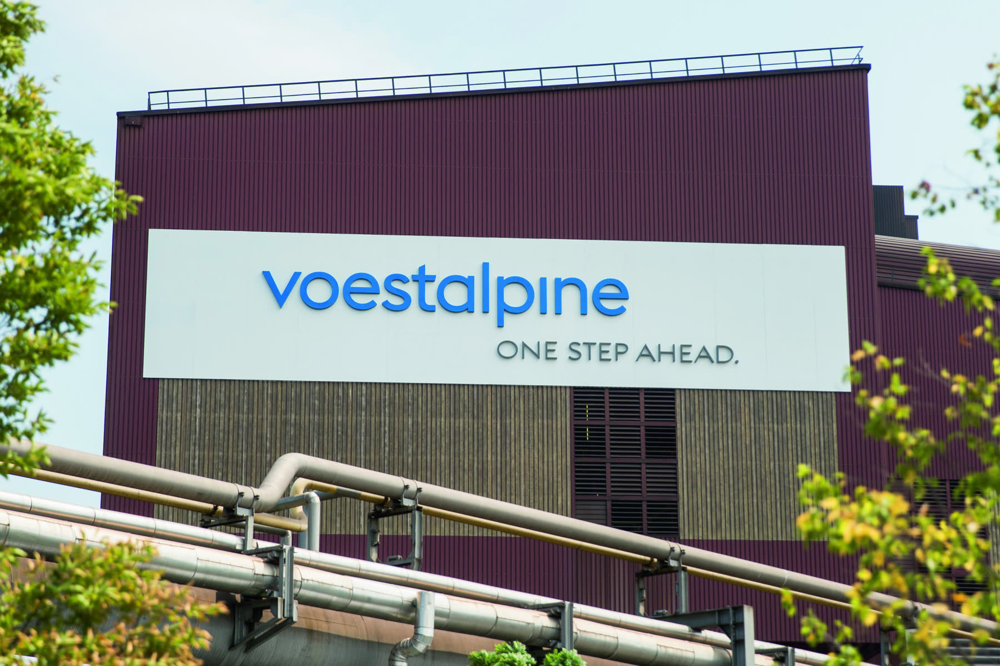

STEEL & MATERIALS
My school of business, industry and manufacturing.
My role at voestalpine
I spent eight years at voestalpine in Linz. Most of that time I worked in the quality department of voestalpine Stahl on non-conforming material: hot rolled, cold rolled and galvanized strip and heavy plate that missed its EN standard or its customer specification. I judged it, decided what it could still be and worked to get it back on an order.
Alongside the job I completed my Matura in materials technology in evening school. It covered metals and plastics, how they are made by casting, forming, machining, welding and plastics processing, how they are tested destructively and non-destructively, and what defects are and where they come from.
It started with my apprenticeship as an industrial clerk, through purchasing, sales, customer service and quality in three group companies. That is where I learned how a large company works across its departments, its systems and its people.
The company
voestalpine AG is a steel and technology group based in Linz, Austria, with 48,800 employees in about 500 group companies and locations in more than 50 countries. Its four divisions make far more than steel: strip and heavy plate, tool steel and parts for aerospace, railway systems, wire and seamless tubes, and ready to install car body components.
I saw much of the group, but worked mostly at voestalpine Stahl GmbH, which makes the hot rolled, cold rolled and coated strip. My apprenticeship also took me to voestalpine Grobblech GmbH for heavy plate and to voestalpine Steel Service Center GmbH, which slits and cuts strip to the sizes customers need.
- Quality and non-conforming material
- Judged hot rolled, cold rolled, galvanized and heavy plate against EN product standards and customer specifications. Worked with camera surface inspection, inline measurement data and lab test values. Judged and classified flagged defects, released or blocked material, followed up on causes and got material back on an order.
- Materials and testing
- Metals first, plastics and other materials alongside. Properties, defects and their causes. Destructive testing such as tensile, hardness, impact and metallography, and non-destructive testing such as ultrasonic, magnetic particle, dye penetrant and X‑ray.
- Manufacturing
- Casting, forming, machining, welding and plastics processing, and the steel route from blast furnace to coil and plate.
- Business, systems and people
- Coordination between quality, production, the lab, sales, customer service and logistics. Internal logistics between lines, stores and plants. Customer contact on deviations, complaints and agreements.
- Industrial clerk apprenticeship
- Purchasing, sales, customer service and quality at voestalpine Stahl, voestalpine Grobblech and voestalpine Steel Service Center.
Non-conforming material
When material misses its specification, the question is what it can still be. The aim was always to get it back on an order instead of scrapping it.
Camera surface inspection, inline measurement data and lab test values flag what deviates from the EN standard or the customer specification.
Does the flagged defect really matter for this material, this standard and this customer? Classifying it also tuned what the system flags next time.
Material that fits is released. Material that does not is blocked, and its causes followed up.
Re-testing, trimming and slitting, reprocessing on a line or sorting out the affected sections.
Where it could not meet its original order, it moved to a broader standard, another customer specification or a less specialised use.


Materials and testing
A quality decision is only as good as the understanding behind it. My Matura in materials technology gave me that understanding, and the daily work put it to use.
- Metals, the bulk of it: how composition and structure set strength, toughness and formability
- Plastics and other materials alongside
- Destructive testing: tensile, hardness, impact, metallography
- Non-destructive testing: ultrasonic, magnetic particle, dye penetrant, X‑ray
- Defects and where they come from
At work I read and judged lab test values and inline measurement data against EN standards and customer specifications, judged whether material that misses one specification still meets another, and followed up on the causes of defects.
Manufacturing
How something is made decides what can go wrong with it, and what can still be fixed. In evening school I learned the processes, at work I saw them on the lines.
- Casting
- Forming: rolling, deep drawing, bending
- Machining: turning, milling
- Welding
- Plastics processing: injection moulding, extrusion
On the job I worked with material from every stage of the steel route in Linz, brought it back into specification by trimming, slitting and reprocessing on the lines, and knew what each product can be used for, which is what makes a new order possible.
Business, systems and people

A steel plant is also a large organisation. Material only moves when departments, systems and people work together, and non-conforming material touches almost all of them.
My apprenticeship took me through purchasing, sales, customer service and quality at voestalpine Stahl, voestalpine Grobblech and voestalpine Steel Service Center. I learned how these departments depend on each other, how orders, material and quality data run through the systems of a large company, and how material is processed and moved from the line to the store to the customer.
In quality I put that to use. I coordinated non-conforming material between quality, production, the lab, sales, customer service and logistics, moved and tracked material between lines, stores and plants, and was in contact with customers on deviations, complaints and agreements.
From slab to product
In Linz, steel comes from the blast furnace and the LD converter, a process invented there, and is cast into slabs. From the slab it takes one of two routes. Pick a product to see how it is made, what it is tested for and where it can go wrong.
- Steel
- Blast furnace
- LD converter
- Continuous casting
- Slab
- Strip
- Hot strip mill
- Cold rolling, annealing
- Zinc coating
- Plate
- Plate mill
- How it is made
- Slabs are reheated and rolled on the hot strip mill into strip, then coiled while hot. Pickling in acid removes the scale.
- Used for
- Structural parts, tubes, vehicle chassis, and as the starting material for cold rolling.
- Tested for
- Yield and tensile strength, elongation, thickness, width, flatness and surface.
- EN standards
- EN 10111, EN 10025-2, EN 10149-2. Tolerances to EN 10051.
- Customer specifications
- Tighter limits for mechanical values, tolerances or surface, agreed per customer.
- Typical deviations
- Mechanical values out of range, thickness or flatness, scale and other surface defects.
- How it is made
- Pickled hot strip is rolled thinner at room temperature, which hardens it. Annealing restores formability, and a skin pass sets surface and flatness.
- Used for
- Car body parts, household appliances, furniture and deep drawn parts.
- Tested for
- Yield and tensile strength, elongation, r and n values for formability, surface quality, roughness and flatness.
- EN standards
- EN 10130 for the DC grades, EN 10268 for higher strength. Tolerances to EN 10131.
- Customer specifications
- Forming values, surface class and roughness agreed per customer, often for visible car body parts.
- Typical deviations
- Forming values out of range, surface defects, flatness.
- How it is made
- Cold rolled strip is annealed and run through a bath of molten zinc on the hot dip galvanizing line, or zinc coated electrolytically.
- Used for
- Car bodies, construction and appliances.
- Tested for
- Coating mass, coating adhesion, the mechanical values of the base steel and surface quality.
- EN standards
- EN 10346 for hot dip coating, for example DX51D+Z275. EN 10152 for electrolytic coating. Tolerances to EN 10143.
- Customer specifications
- Coating mass, surface quality and base steel values agreed per customer.
- Typical deviations
- Coating mass, zinc surface defects, mechanical values of the base steel.
- How it is made
- Slabs are rolled on the plate mill into thick plates, often thermomechanically rolled or heat treated, then cut, levelled and tested.
- Used for
- Pipelines, wind towers, shipbuilding, bridges and construction machinery.
- Tested for
- Yield and tensile strength, toughness in the Charpy impact test, internal defects by ultrasonic testing, thickness and flatness.
- EN standards
- EN 10025, EN 10028 for pressure vessels. Tolerances to EN 10029, ultrasonic testing to EN 10160.
- Customer specifications
- Toughness at set temperatures, ultrasonic class and tolerances agreed per project.
- Typical deviations
- Strength or toughness values, internal defects, flatness, surface.
Standards, specifications and uses are typical examples for each product group, not specific orders.
The group
Steel Division, where I workedHigh quality steel strip, heavy plate and cast products for energy. For automotive, housing, machinery and energy.
Copyright: voestalpine AG, Source: voestalpine.com. All photos and films from voestalpine.com. Company figures and divisions from voestalpine.com and the group's reports. Standards and test values describe the product groups in general. This page describes my own work as part of the team and is not an official voestalpine page.